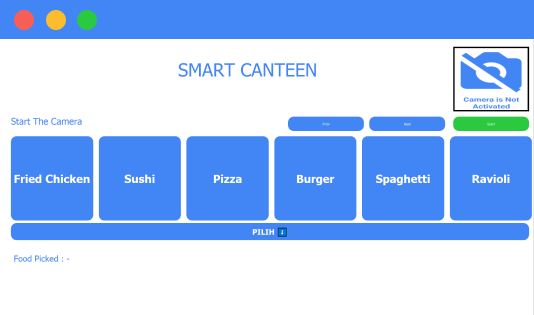

Detect the Direction of the Face
Detecting the direction of facial movements using faciallandmark and optical flow
Desktop Application
Face Direction Detection Using Faciallandmark & OpticalFlow
"Smart canteen destktop application that uses head movements to navigate options"
Donwload Application
Detecting the direction of facial movements using faciallandmark and optical flow


by using the point in the faciallandmark, the point will be tracked using opticalflow and determine the direction of the face.